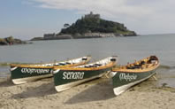

Rowing, Sailing & Diving in Mounts Bay & Penwith
Gig Rowing and Canoeing
Mounts bay, Penzance harbour and the shallow waters all ad up to great conditions for beginners tuition, allowing a gentle introduction. The beaches, with variable surf conditions year round give the more experienced a challenge.
There are over 29 Gig Racing Clubs around Cornwall and the Isles of Scilly. The Isles of Scilly alone has 13 gigs.
Gig races are held
as sporting events with a calendar of regular fixtures during the year. The clubs compete against each other in a number of competitions and
the World Gig Racing Championships are held on the Isles of Scilly
every year. The World Championship sees teams from across the globe
competing in addition to local gig teams.
- Penzance Canoe Club, (01736 740755)
Albert Pier, Penzance
- Zennor Gig Club
www.zennorrgigclub.com
- Cape Cornwall Pilot Gig Club
www.capecornwallgigclub.co.uk
Scuba Diving in Penzance, Mounts Bay and Isle of Scilly
Over the past 15 years water conditions in Mounts bay have been continually improving. This has led to an ideal place to scuba dive in the UK. In fact, Universities and Scuba clubs from the entire UK descend on Penzance in the summer for 'Scuba Holidays' in the seas around Penwith.
Dive sites in the surrounding seas provide depths to 27m, and a gentle half knot current. The local hotspot is Runnel Stone, with 2 wrecked steamships, visibility to 52 metres. The site is teaming with ling, bass, pollock and conger.
Penzance in the gateway to diving in the Scilly Isles. The Albert Pier in Penzance is the headquarters of the Penzance Branch of the British Sub-Aqua Club, and is where diving air is available.
- The British Sub-Aqua Club (01736 850426)
2 Relistian Park, Reawla, Gwinear, Hayle
- Penzance Divers (01736 365226)
Penzance Diving Club, Albert Pier, Penzance. TR18 2LL
www.Penzancediver.org
Sailing
There are two sailing clubs in Mounts Bay, the Penzance Sailing Club located on Albert Pier and Mount’s Bay Sailing Club at Marazion.
- Penzance Sailing Club (01736 364989)
Albert Pier, Penzance
www.pzsc.org.uk
- Mounts Bay Sailing Club (01736 710620)
The Clubhouse, Godolphin Steps, Marazion
images - zennorgigclub.com